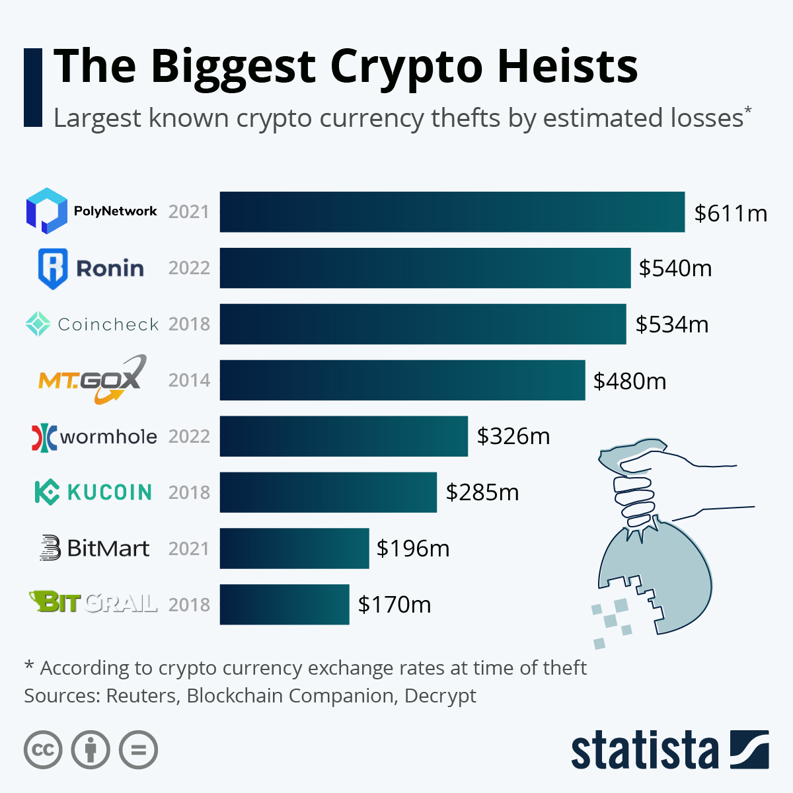
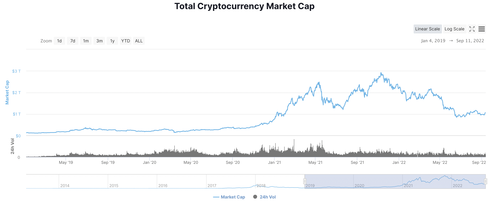

Introduction
Summary
A cryptocurrency or crypto is a computerized cash intended to function as a mode of trade through a PC network that isn’t dependent on any focal power, like an administration or bank, to maintain or regulate it. It is a decentralized framework for substantiating that parties involved in an exchange have the cash they declare, which removes the need for conventional go-betweens, like banks, when funds are being moved between parties.
Individual coin ownership records are secured in a digital ledger, which is an electronic database employing robust cryptography for connecting transaction records, to regulate the formation of more coins, and to confirm the exchange of coin proprietorship. Some crypto plans use official validators to keep up with the digital currency. In a proof-of-stake model, proprietors set up their tokens as collateral. Consequently, they get authority over the token with respect to the amount they stake. For the most part, these stakers get extra proprietorship in the token by means of network charges, brand new created tokens, or other such reward mechanisms.
There is no such thing as digital currency in actual structure (like paper cash) and is ordinarily not sanctioned by an authority. Cryptographic forms of money normally utilize decentralized control instead of a Central Bank Digital Currency (CBDC). When carried out in a decentralized setting, each cryptocurrency functions via a blockchain (a distributed legder technology), that fills in as a public monetary exchange database.
Although deliberate, anonymity and the absence of a centralized authority make cryptocurrency highly susceptible to hackers conducting digital attacks. In January 2014, Mt.Gox — then the world’s biggest bitcoin platform — became bankrupt due to an attack that resulted in a loss off 850,000 bitcoin (BTC). It is not yet known what exactly transpired, but it is likely that the missing BTC was mined steadily over time, starting in 2011, and sold on other platforms for cash (including Mt.Gox!), until one day Mt.Gox checked their wallets and found their BTC had vanished.
Numerous such attacks have taken place since this episode and the REKT Database has chronicled such attacks in a relational database. My topic encompasses these cyber risks, such as flash loans attacks, exit scams, and honeypots, affecting cryptocurrency exchanges and tokens. I plan to analyze and compare media sentiment with public sentiment pertaining to their respective confidence in crypto exchanges (security-wise). I do not wish to shed light on any financial aspects of crypto, such as price volatility, market share, etc. I gathered my textual and record data through APIs for which I used the R Twitter API and News API in Python. I also obtained the data of the REKT Database through their API after I performed some initial web-scraping, when I was oblivious about the existence of their API. Through this portfolio, I aim to highlight what factors, how much money, and which platforms are affected by two types of attacks, Exit Scams, comprising Honeypot attacks, Rugpull attacks, and Abandoned projects, and Exploits, comprising Access Control, Flash Loan Attacks, and Phishing.

Importance
The Bitconnect scam in the year 2020 resulted in $2.5 billion of fraudulent activity that victimized over 1.5 million ppl. This scam was also infamously known as a Ponzi Scheme or pyramid scheme among investors and it is echoed throughout social media that cryptocurrencies’ infrastucture reflect that of a Ponzi Scheme. Modern digital technology and connectivity is a double edged sword because of the huge economies of scale of swindling a collective group of people. Yes, law enforcement has improved significantly as arrests are increasing all over the world and, hence, billions of dollars being recovered from criminals. Cyber criminals are on the rise due to increasing cryptocurrency market cap by more than 3 fold each year since 2019. The Willie Sutton Principle resonates the fact that the value of cryptocurrencies keeps increasing, which translates to higher risk of criminals that find crypto attacks as a lucrative, and a somewhat less precarious, way of pillaging investors.
While the world is likely still some years away from the widespread adoption of this approach – or even use at the consumer level – central bank digital currencies will likely feature prominently in future cross-border transactions, and consequently render most payment processors and messaging systems, like SWIFT, obsolete. Regardless, cryptocurrencies’ promises of egalitarian finance have so far proven only magnets for criminal enterprise, high-risk investors, and rogue regimes – and quickly devolved into what may eventually turn out to be history’s biggest pyramid scheme.

Value of cryptocurrency theft worldwide from 2019 to Present (in trillion U.S. dollars:)

Questions to Address
- Which crypto crimes, such as exit scams, honeypots, and rug pulls, are most prevalent across the world?
- Which crypto crimes generate the highest loss of swindled money/assets?
- Which crypto crimes result the highest and lowest recovery of swindled money/assets? Any reasons as to why the findings might be such?
- Do certain months and days of the week indicate higher chances of either an Exit Scam or Exploit attack?
- Is the ETH (Ethereum) chain/platform the most exposed to crypto attacks?
- If the answer to the above questions is yes, how do the public and media trust ETH?
- Have certain crypto tokens or exchanges been more susceptible to digital attacks? Were they dependent on the ETH platform?
- Is there a date pattern in relation to attacks on certain crypto chains/platforms?
- Can a Machine Learning classifier model predict: 1. how much money a crypto exchange or token could lose in an immediate attack? and 2. which kind of attack a crypto exchange or token could face next?
- Does public sentiment match media sentiment concerning the future of crypto security?
References
Matthew Rosenquist, “Top 2020 Cybersecurity Lessons for Cryptocurrency,” YouTube (YouTube, January 4, 2021), https://www.youtube.com/watch?v=n_wywXF4wAQ.
Aaron Arnold, ed., “Stolen Billions from Errant Mouse Clicks: Crypto Requires New Approaches to Attack Money-Laundering,” Taylor & Francis, accessed September 8, 2022, https://www.tandfonline.com/doi/abs/10.1080/00963402.2022.2087374?casa_token=DX6lr3A2FkcAAAAA%3AFJAGmn_PjHCLRT_F0GDQb5K6naEIBW910oisvtSnyMRjAsqNrGECoKmgw7jzDifnr0YuqPv84H4Sed8.
Aaron Arnold, ed., “Stolen Billions from Errant Mouse Clicks: Crypto Requires New Approaches to Attack Money-Laundering,”.